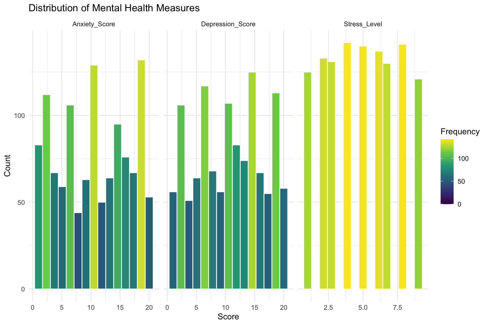
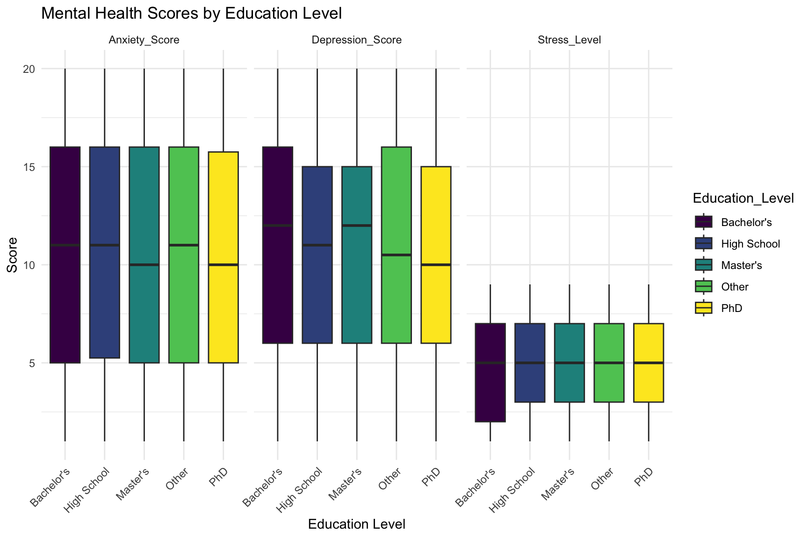
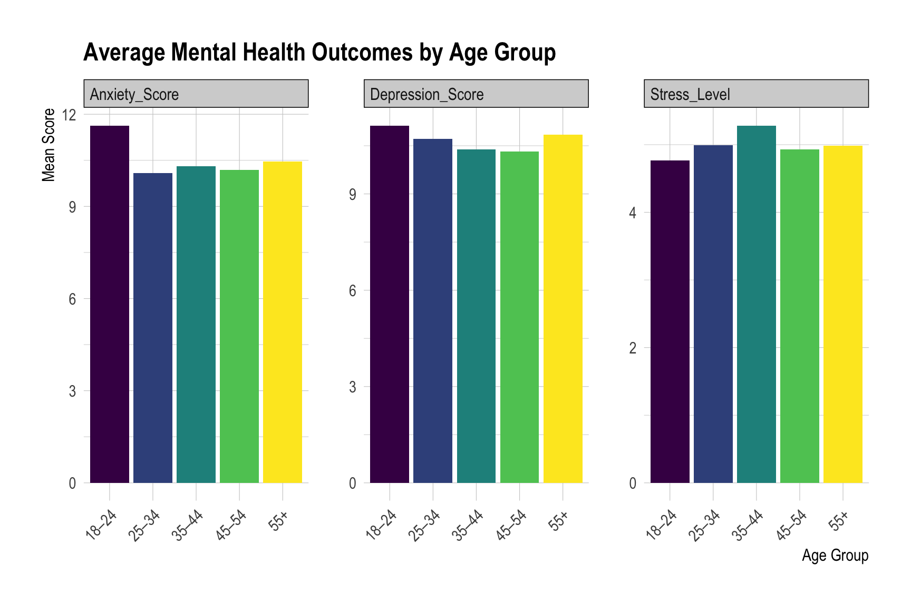
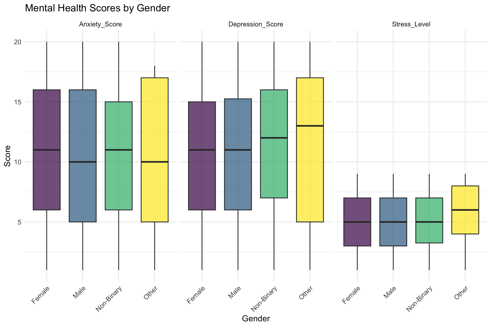

library(tidyverse)
df <- read_csv("/Users/willakin/Documents/DANL 310/DANL 310/DANL 310/anxiety_depression_data.csv")DANL 310 Mental Health Analysis Project
DANL 310: Data Visualization and Presentation
Project Overview
- Project Webpage: Insert link here
Write a short overview of your data storytelling project.
Your project should tell an interesting and coherent story using:
- descriptive statistics,
- data transformation, and
- data visualization.
A literature review, regression model, machine learning model, or formal statistical model is not required.
Big Idea
State the main message of your project in 2–3 sentences.
As a data analytics and sociomedical science major, I am interested in studying public health datasets to better understand mental health trends and the factors associated with disorders such as anxiety and depression. This topic is especially important because mental health disorders affect millions of people and can significantly impact overall well-being and quality of life. By analyzing these patterns and trends, public health professionals, healthcare providers, policymakers, and researchers can develop more effective prevention strategies, interventions, and support systems for affected individuals and communities.
Guiding Question or Story Theme
How can public health data analysis help identify the social, behavioral, and demographic factors that contribute to mental health disorders such as anxiety and depression?
Background and Context
Mental health data is important because it allows researchers to identify social, behavioral, and demographic variables that may increase a person’s risk for mental health conditions.
Data
Key Variables
colnames(df) [1] "Age" "Gender"
[3] "Education_Level" "Employment_Status"
[5] "Sleep_Hours" "Physical_Activity_Hrs"
[7] "Social_Support_Score" "Anxiety_Score"
[9] "Depression_Score" "Stress_Level"
[11] "Family_History_Mental_Illness" "Chronic_Illnesses"
[13] "Medication_Use" "Therapy"
[15] "Meditation" "Substance_Use"
[17] "Financial_Stress" "Work_Stress"
[19] "Self_Esteem_Score" "Life_Satisfaction_Score"
[21] "Loneliness_Score" library(skimr)
skim(df)| Name | df |
| Number of rows | 1200 |
| Number of columns | 21 |
| _______________________ | |
| Column type frequency: | |
| character | 5 |
| numeric | 16 |
| ________________________ | |
| Group variables | None |
Variable type: character
| skim_variable | n_missing | complete_rate | min | max | empty | n_unique | whitespace |
|---|---|---|---|---|---|---|---|
| Gender | 0 | 1 | 4 | 10 | 0 | 4 | 0 |
| Education_Level | 0 | 1 | 3 | 11 | 0 | 5 | 0 |
| Employment_Status | 0 | 1 | 7 | 10 | 0 | 4 | 0 |
| Medication_Use | 0 | 1 | 4 | 10 | 0 | 3 | 0 |
| Substance_Use | 0 | 1 | 4 | 10 | 0 | 3 | 0 |
Variable type: numeric
| skim_variable | n_missing | complete_rate | mean | sd | p0 | p25 | p50 | p75 | p100 | hist |
|---|---|---|---|---|---|---|---|---|---|---|
| Age | 0 | 1 | 46.32 | 16.45 | 18 | 33.0 | 46.0 | 61.0 | 74.0 | ▇▆▇▇▇ |
| Sleep_Hours | 0 | 1 | 6.47 | 1.53 | 2 | 5.4 | 6.4 | 7.5 | 12.4 | ▁▆▇▂▁ |
| Physical_Activity_Hrs | 0 | 1 | 2.01 | 2.04 | 0 | 0.6 | 1.4 | 2.7 | 15.1 | ▇▂▁▁▁ |
| Social_Support_Score | 0 | 1 | 5.06 | 2.65 | 1 | 3.0 | 5.0 | 7.0 | 9.0 | ▇▇▃▇▇ |
| Anxiety_Score | 0 | 1 | 10.47 | 5.91 | 1 | 5.0 | 10.5 | 16.0 | 20.0 | ▇▆▇▇▇ |
| Depression_Score | 0 | 1 | 10.67 | 5.63 | 1 | 6.0 | 11.0 | 15.0 | 20.0 | ▆▇▇▇▇ |
| Stress_Level | 0 | 1 | 5.00 | 2.54 | 1 | 3.0 | 5.0 | 7.0 | 9.0 | ▇▇▅▇▇ |
| Family_History_Mental_Illness | 0 | 1 | 0.32 | 0.47 | 0 | 0.0 | 0.0 | 1.0 | 1.0 | ▇▁▁▁▃ |
| Chronic_Illnesses | 0 | 1 | 0.27 | 0.44 | 0 | 0.0 | 0.0 | 1.0 | 1.0 | ▇▁▁▁▃ |
| Therapy | 0 | 1 | 0.21 | 0.41 | 0 | 0.0 | 0.0 | 0.0 | 1.0 | ▇▁▁▁▂ |
| Meditation | 0 | 1 | 0.40 | 0.49 | 0 | 0.0 | 0.0 | 1.0 | 1.0 | ▇▁▁▁▅ |
| Financial_Stress | 0 | 1 | 4.99 | 2.59 | 1 | 3.0 | 5.0 | 7.0 | 9.0 | ▇▇▅▇▇ |
| Work_Stress | 0 | 1 | 4.89 | 2.55 | 1 | 3.0 | 5.0 | 7.0 | 9.0 | ▇▇▃▇▇ |
| Self_Esteem_Score | 0 | 1 | 5.06 | 2.53 | 1 | 3.0 | 5.0 | 7.0 | 9.0 | ▇▇▃▇▇ |
| Life_Satisfaction_Score | 0 | 1 | 5.12 | 2.57 | 1 | 3.0 | 5.0 | 7.0 | 9.0 | ▇▇▅▇▇ |
| Loneliness_Score | 0 | 1 | 4.96 | 2.57 | 1 | 3.0 | 5.0 | 7.0 | 9.0 | ▇▇▅▇▇ |
summary(df) Age Gender Education_Level Employment_Status
Min. :18.00 Length :1200 Length :1200 Length :1200
1st Qu.:33.00 N.unique : 4 N.unique : 5 N.unique : 4
Median :46.00 N.blank : 0 N.blank : 0 N.blank : 0
Mean :46.32 Min.nchar: 4 Min.nchar: 3 Min.nchar: 7
3rd Qu.:61.00 Max.nchar: 10 Max.nchar: 11 Max.nchar: 10
Max. :74.00
Sleep_Hours Physical_Activity_Hrs Social_Support_Score Anxiety_Score
Min. : 2.000 Min. : 0.000 Min. :1.000 Min. : 1.00
1st Qu.: 5.400 1st Qu.: 0.600 1st Qu.:3.000 1st Qu.: 5.00
Median : 6.400 Median : 1.400 Median :5.000 Median :10.50
Mean : 6.469 Mean : 2.006 Mean :5.055 Mean :10.47
3rd Qu.: 7.500 3rd Qu.: 2.700 3rd Qu.:7.000 3rd Qu.:16.00
Max. :12.400 Max. :15.100 Max. :9.000 Max. :20.00
Depression_Score Stress_Level Family_History_Mental_Illness
Min. : 1.00 Min. :1.000 Min. :0.0000
1st Qu.: 6.00 1st Qu.:3.000 1st Qu.:0.0000
Median :11.00 Median :5.000 Median :0.0000
Mean :10.67 Mean :5.001 Mean :0.3183
3rd Qu.:15.00 3rd Qu.:7.000 3rd Qu.:1.0000
Max. :20.00 Max. :9.000 Max. :1.0000
Chronic_Illnesses Medication_Use Therapy Meditation
Min. :0.0000 Length :1200 Min. :0.00 Min. :0.0000
1st Qu.:0.0000 N.unique : 3 1st Qu.:0.00 1st Qu.:0.0000
Median :0.0000 N.blank : 0 Median :0.00 Median :0.0000
Mean :0.2675 Min.nchar: 4 Mean :0.21 Mean :0.3992
3rd Qu.:1.0000 Max.nchar: 10 3rd Qu.:0.00 3rd Qu.:1.0000
Max. :1.0000 Max. :1.00 Max. :1.0000
Substance_Use Financial_Stress Work_Stress Self_Esteem_Score
Length :1200 Min. :1.000 Min. :1.000 Min. :1.000
N.unique : 3 1st Qu.:3.000 1st Qu.:3.000 1st Qu.:3.000
N.blank : 0 Median :5.000 Median :5.000 Median :5.000
Min.nchar: 4 Mean :4.992 Mean :4.889 Mean :5.062
Max.nchar: 10 3rd Qu.:7.000 3rd Qu.:7.000 3rd Qu.:7.000
Max. :9.000 Max. :9.000 Max. :9.000
Life_Satisfaction_Score Loneliness_Score
Min. :1.00 Min. :1.000
1st Qu.:3.00 1st Qu.:3.000
Median :5.00 Median :5.000
Mean :5.12 Mean :4.959
3rd Qu.:7.00 3rd Qu.:7.000
Max. :9.00 Max. :9.000 Unit of Observation
Each row in the dataset represents one individual participant and their demographic, lifestyle, social, and mental health information. The variables include characteristics such as age, gender, education level, employment status, sleep hours, physical activity, stress levels, social support, and mental health measures including anxiety and depression scores. Together, each row provides a profile of a person that can be analyzed to identify patterns and factors associated with mental health outcomes.
Data Source
The data set I used is called Anxiety and Depression Mental Health Factors. I retrieved this data from Kaggle. I accessed this data on April 10th. This dataset contains related to anxiety, depression, and mental health influences. It includes demographic details, lifestyle habits, mental health indicators, medical history, coping mechanisms, and stress factors. The dataset is designed for mental health analysis, predictive modeling, and research on the impact of various factors on mental well-being. The link is https://www.kaggle.com/datasets/ak0212/anxiety-and-depression-mental-health-factors
Data Preparation and Transformation
First I refactored the data variables. Then I created Age group variables that divided the age variables into different age ranges for better analysis. I also reshaped the data frame to Outcome and Score for a better analysis on how the variables of Score impact the variables of Outcome.
df <- df %>%
mutate(
Gender = as.factor(Gender),
Education_Level = as.factor(Education_Level),
Employment_Status = as.factor(Employment_Status),
Family_History_Mental_Illness = as.factor(Family_History_Mental_Illness),
Chronic_Illnesses = as.factor(Chronic_Illnesses),
Medication_Use = as.factor(Medication_Use),
Therapy = as.factor(Therapy),
Meditation = as.factor(Meditation),
Substance_Use = as.factor(Substance_Use)
)df <- df %>%
mutate(
Age_Group = case_when(
Age < 18 ~ "Under 18",
Age >= 18 & Age <= 24 ~ "18–24",
Age >= 25 & Age <= 34 ~ "25–34",
Age >= 35 & Age <= 44 ~ "35–44",
Age >= 45 & Age <= 54 ~ "45–54",
Age >= 55 ~ "55+"
)
)df_long <- df %>%
pivot_longer(
cols = c(Anxiety_Score, Depression_Score, Stress_Level),
names_to = "Outcome",
values_to = "Score"
)Descriptive Statistics
library(tidyverse)
summary_table <- df %>%
summarise(
Anxiety_Mean = mean(Anxiety_Score, na.rm = TRUE),
Anxiety_SD = sd(Anxiety_Score, na.rm = TRUE),
Depression_Mean = mean(Depression_Score, na.rm = TRUE),
Depression_SD = sd(Depression_Score, na.rm = TRUE),
Stress_Mean = mean(Stress_Level, na.rm = TRUE),
Stress_SD = sd(Stress_Level, na.rm = TRUE)
)
summary_table# A tibble: 1 × 6
Anxiety_Mean Anxiety_SD Depression_Mean Depression_SD Stress_Mean Stress_SD
<dbl> <dbl> <dbl> <dbl> <dbl> <dbl>
1 10.5 5.91 10.7 5.63 5.00 2.54The mean values of Anxiety, Depression, and Stress Level can be used as benchmarks when comparing the levels across different variables.
Basic Summary
skim(df)| Name | df |
| Number of rows | 1200 |
| Number of columns | 22 |
| _______________________ | |
| Column type frequency: | |
| character | 1 |
| factor | 9 |
| numeric | 12 |
| ________________________ | |
| Group variables | None |
Variable type: character
| skim_variable | n_missing | complete_rate | min | max | empty | n_unique | whitespace |
|---|---|---|---|---|---|---|---|
| Age_Group | 0 | 1 | 3 | 5 | 0 | 5 | 0 |
Variable type: factor
| skim_variable | n_missing | complete_rate | ordered | n_unique | top_counts |
|---|---|---|---|---|---|
| Gender | 0 | 1 | FALSE | 4 | Fem: 569, Mal: 520, Non: 90, Oth: 21 |
| Education_Level | 0 | 1 | FALSE | 5 | PhD: 262, Hig: 242, Mas: 242, Oth: 240 |
| Employment_Status | 0 | 1 | FALSE | 4 | Emp: 320, Stu: 310, Une: 288, Ret: 282 |
| Family_History_Mental_Illness | 0 | 1 | FALSE | 2 | 0: 818, 1: 382 |
| Chronic_Illnesses | 0 | 1 | FALSE | 2 | 0: 879, 1: 321 |
| Medication_Use | 0 | 1 | FALSE | 3 | Non: 747, Reg: 238, Occ: 215 |
| Therapy | 0 | 1 | FALSE | 2 | 0: 948, 1: 252 |
| Meditation | 0 | 1 | FALSE | 2 | 0: 721, 1: 479 |
| Substance_Use | 0 | 1 | FALSE | 3 | Non: 834, Occ: 242, Fre: 124 |
Variable type: numeric
| skim_variable | n_missing | complete_rate | mean | sd | p0 | p25 | p50 | p75 | p100 | hist |
|---|---|---|---|---|---|---|---|---|---|---|
| Age | 0 | 1 | 46.32 | 16.45 | 18 | 33.0 | 46.0 | 61.0 | 74.0 | ▇▆▇▇▇ |
| Sleep_Hours | 0 | 1 | 6.47 | 1.53 | 2 | 5.4 | 6.4 | 7.5 | 12.4 | ▁▆▇▂▁ |
| Physical_Activity_Hrs | 0 | 1 | 2.01 | 2.04 | 0 | 0.6 | 1.4 | 2.7 | 15.1 | ▇▂▁▁▁ |
| Social_Support_Score | 0 | 1 | 5.06 | 2.65 | 1 | 3.0 | 5.0 | 7.0 | 9.0 | ▇▇▃▇▇ |
| Anxiety_Score | 0 | 1 | 10.47 | 5.91 | 1 | 5.0 | 10.5 | 16.0 | 20.0 | ▇▆▇▇▇ |
| Depression_Score | 0 | 1 | 10.67 | 5.63 | 1 | 6.0 | 11.0 | 15.0 | 20.0 | ▆▇▇▇▇ |
| Stress_Level | 0 | 1 | 5.00 | 2.54 | 1 | 3.0 | 5.0 | 7.0 | 9.0 | ▇▇▅▇▇ |
| Financial_Stress | 0 | 1 | 4.99 | 2.59 | 1 | 3.0 | 5.0 | 7.0 | 9.0 | ▇▇▅▇▇ |
| Work_Stress | 0 | 1 | 4.89 | 2.55 | 1 | 3.0 | 5.0 | 7.0 | 9.0 | ▇▇▃▇▇ |
| Self_Esteem_Score | 0 | 1 | 5.06 | 2.53 | 1 | 3.0 | 5.0 | 7.0 | 9.0 | ▇▇▃▇▇ |
| Life_Satisfaction_Score | 0 | 1 | 5.12 | 2.57 | 1 | 3.0 | 5.0 | 7.0 | 9.0 | ▇▇▅▇▇ |
| Loneliness_Score | 0 | 1 | 4.96 | 2.57 | 1 | 3.0 | 5.0 | 7.0 | 9.0 | ▇▇▅▇▇ |
Initial Observations
Briefly explain what the descriptive statistics show.
Focus on patterns such as:
- largest or smallest groups,
- typical values,
- variation across groups,
- outliers or unusual cases,
- missing data issues, and
- patterns that set up your main story.
Data Visualization and Storytelling
This section is the main body of your project. Use visualizations to build a clear story.
Each visualization should include:
- a clear, message-driven title,
- readable axis labels,
- appropriate chart type,
- thoughtful color choices,
- colorblind-friendly colors,
- a source note or caption when appropriate, and
- a short written interpretation.
Your webpage should feel like one coherent narrative, not a disconnected collection of plots.
Visualization 1: Main Pattern
library(tidyverse)
library(viridis)
ggplot(df_long, aes(x = Score, fill = after_stat(count))) +
geom_histogram(bins = 15, color = "white") +
facet_wrap(~ Outcome, scales = "free_x") +
scale_fill_viridis_c() +
theme_minimal() +
labs(
title = "Distribution of Mental Health Measures",
x = "Score",
y = "Count",
fill = "Frequency"
)
Interpretation:
Explain what this visualization shows. What should the audience notice first? How does this figure begin the story?
Visualization 2: Comparison or Contrast
library(tidyr)
library(dplyr)
library(ggplot2)
library(ggthemes)
ggplot(df_long, aes(x = Education_Level, y = Score, fill = Education_Level)) +
geom_boxplot() +
facet_wrap(~ Outcome) +
scale_fill_viridis_d()+
theme_minimal() +
labs(
title = "Mental Health Scores by Education Level",
x = "Education Level",
y = "Score"
) +
theme(axis.text.x = element_text(angle = 45, hjust = 1))
Interpretation:
Interpretation: Mean Stress Level has little differentiation per education level. The Master’s education Level had a low mean anxiety score, but a high depression score.
Visualization 3: Trend, Relationship, or Deeper Pattern
library(tidyverse)
library(viridis)
df_long_summary <- df_long %>%
group_by(Age_Group, Outcome) %>%
summarise(mean_score = mean(Score, na.rm = TRUE), .groups = "drop")
ggplot(df_long_summary, aes(x = Age_Group, y = mean_score, fill = Age_Group)) +
geom_col() +
scale_fill_viridis_d() +
facet_wrap(~Outcome, scales = "free_y") +
labs(
title = "Average Mental Health Outcomes by Age Group",
x = "Age Group",
y = "Mean Score"
) +
theme(axis.text.x = element_text(angle = 45, hjust = 1),
legend.position = "none")
Interpretation:
Interpretation: 18-24 year olds had the greatest anxiety and depression score, possibly due to school. 35-44 year olds had the greatest stress levels.
Optional Visualization 4: Additional Evidence 1
ggplot(df_long, aes(x = Gender, y = Score, fill = Gender)) +
geom_boxplot(alpha = 0.7) +
facet_wrap(~ Outcome) +
scale_fill_viridis_d() +
theme_minimal() +
labs(
title = "Mental Health Scores by Gender",
x = "Gender",
y = "Score"
) +
theme(axis.text.x = element_text(angle = 45, hjust = 1),
legend.position = "none")
Interpretation:
Other Gender had greatest Depression and Stress Level Scores, possibly due to social stigma.
Shiny App
Briefly describe the Shiny app and dashboard that accompany this project.
Dashboard
- Dashboard: Insert link here
Explain how dashboard help users interact with or explore the project data.
Connecting the Dots
Bring the visual evidence together.
Explain how your descriptive statistics, transformations, and visualizations work together to answer your guiding question or support your story theme.
You may discuss:
- the strongest pattern in the data,
- a surprising result,
- differences across groups,
- changes over time,
- geographic or categorical variation,
- practical, business, economic, social, cultural, or policy relevance,
- why your audience should care.
Discussion
Interpret the meaning of your findings in plain language.
This project does not require regression, machine learning, or causal inference. Avoid claiming that one variable causes another unless your project design truly supports that claim.
Use careful language such as:
- The data suggest that…
- The pattern is consistent with…
- One possible explanation is…
- This comparison shows that…
- This trend raises questions about…
Limitations
Discuss what your data story can and cannot show.
Possible limitations include:
- missing data,
- limited time period,
- measurement issues,
- small sample size,
- data not representing all populations,
- descriptive analysis cannot prove causality.
Conclusion
Summarize your project in one or two paragraphs.
Return to your Big Idea and explain the main takeaway your audience should remember.
A strong conclusion should answer:
- What did the data reveal?
- Why does it matter?
- What should the audience remember after leaving your webpage?
Future Directions
Briefly explain what you would explore next.
Examples:
- additional variables,
- a longer time period,
- different geographic areas,
- more detailed group comparisons,
- a dashboard or interactive visualization improvement,
- a follow-up analysis using modeling, if appropriate.
References
List all sources used in your project.
Include:
- data sources,
- websites,
- reports,
- articles,
- R packages or tools, if relevant.
For online sources, include the full URL and date accessed.
Appendix
Use the appendix for extra materials that are useful but not central to the story.
Examples:
- additional tables,
- additional figures,
- extra data cleaning details,
- code that is too long for the main narrative.
# Optional extra code.Project Checklist
Before submitting, check that your project includes the following: